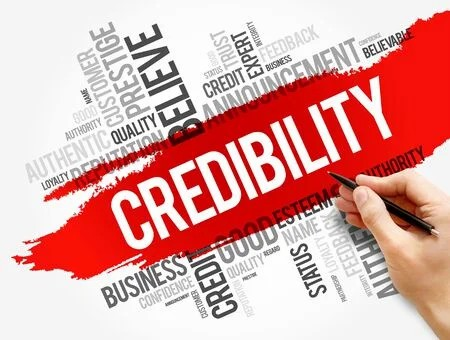
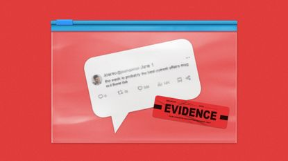
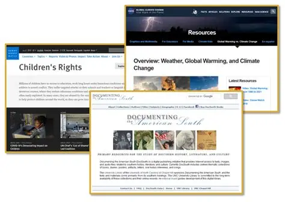

Online information is easy to access, but not everything found on the internet is accurate. Some websites publish misleading content, incomplete data, or false claims. Because of this, verifying online sources is an important skill that helps users avoid misinformation and make better decisions.
Verification means checking whether information comes from a reliable and trustworthy source. It helps ensure that the content is accurate, updated, and supported by evidence. By learning simple verification techniques, users can become more responsible digital citizens.
The Value of Verification
Many people trust online information because it appears professional or is shared frequently. However, popularity does not always mean accuracy. False information can spread quickly, especially on social media platforms where users share posts without checking them carefully.
Verification helps users confirm whether information is supported by reliable sources. This process prevents misunderstanding and helps maintain accuracy when using information for school, work, or daily decision-making.
Information should not be trusted immediately just because it looks convincing. Always take time to verify the source.
Checking the Author and Website
One of the first steps in verifying online sources is identifying who created the content. Reliable articles usually include the author’s name, credentials, and background. Websites from universities, government institutions, and professional organizations are often more trustworthy.
It is also helpful to examine the website’s appearance and purpose. A credible website usually provides contact details, clear information about the organization, and transparent references.

Looking at Evidence and Dates
Reliable sources often include supporting evidence such as references, statistics, links, or research findings. Articles that present facts without evidence may not be dependable. Checking the publication date is also important because outdated information may no longer be accurate.

Checking Domain History
Another useful verification step is checking the domain history of a website. Domain history shows when a website was created and whether it has an established reputation. Fake websites are sometimes newly created to spread misleading content.
Tools such as WHOIS lookup services can show domain registration details and help determine whether a website is trustworthy.
Comparing Multiple Sources
Comparing information across several reliable websites helps confirm accuracy. If multiple trusted sources report the same information, it is more likely correct.

- Check author credentials
- Review supporting evidence
- Verify publication date
- Check domain credibility
- Compare multiple sources
What We’ve Learned
Verifying online sources helps users avoid misinformation and make informed decisions. Checking authors, reviewing evidence, analyzing domain credibility, and comparing sources improve the reliability of information.
Reliable information comes from credible authors, supported evidence, and trustworthy websites.